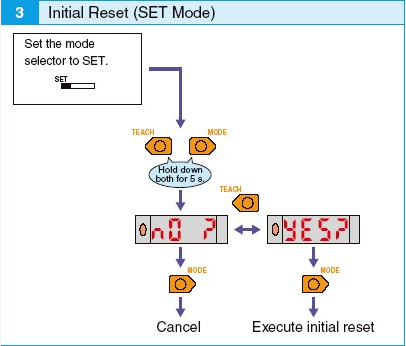

Service History
Subject: NS-7000 & NS-8000 series Auto teaching Amplifier setting
Handler Model:NS-7000 & NS-8000
Controller: RC520
Date:
Initialize the Amplifier

Amplifier Setting
1) Set the mode selector to SET.

2) Hold down Mode button for 2sec or longer.
3) Check the following setting.
Note: Press Teach button to change the mode.
4) Detection Function

5) Timer
6) Flashing
7) Hold
8) Display Detection
Amplifier Two Point Teaching

1) Select Dark ON.
2) Set to SET Mode.

3) Move the fiber sensor red light to the black circle and press the Teach button for 1 sec.
4) The red level display is lit
5) Move the fiber sensor red light out of the black circle ( on the aluminum plate) and press the Teach button for 1 sec.

6) Teaching is complete when the green display is lit. The level display will display digital incident level.
7) Set to RUN Mode.